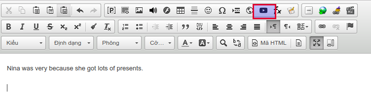

Nhúng video từ youtube
AZtest khuyến khích việc sử dụng youtube làm nơi lưu trữ, chia sẽ video, tiết kiệm dung lượng cho hệ thống.
Khi đã có video từ Youtube, bạn cần thực hiện các bước sau:
Bước 1: Sao chép đường dẫn video. Ví dụ: https://www.youtube.com/watch?v=bqL76wUDkCI&t=72s
Bước 2: Click icon Embed Youtube Video trên trình soạn thảo

Bước 3: Trong cửa sổ này, bạn tiến hành dán (paste) đường dẫn video đã chuẩn bị ở bước 1 vào ô Dãn đường dẫn video Youtube (1)

Cũng trong cửa sổ này, bạn có thể:
- Thiết lập chiều rộng, cao của video khi phát (2)
- Responsive video (3): cho phép tự động thay đổi kích thước video phù hợp với các kích cỡ màn hình khác nhau
- Tự động phát video (4): Video sẽ tự động phát sau khi tải trang
Cuối cùng, click Đồng ý để lưu các thiết lập
Chèn video từ máy tính
Trong trường hợp bạn đã chuẩn bị file video trên máy tính và không muốn upload video lên các kênh chia sẽ miễn phí, bạn hoàn toàn có thể upload file của bạn lên hệ thống.
Hỗ trợ định dạng mp4
Bước 1: Click vào icon Video trên trình soạn thảo

Bước 2: Trong cửa số này, bạn cần thực hiện một số thao tác

- Hình minh họa (1): Chọn ảnh minh họa sẽ hiển thị trước khi phát video
- Thiết lập chiều rộng, cao của video khi phát (2)
- Chọn tập tin video từ máy (3). Xem thêm: Quản lý file
Cuối cùng, click Đồng ý để lưu các thiết lập